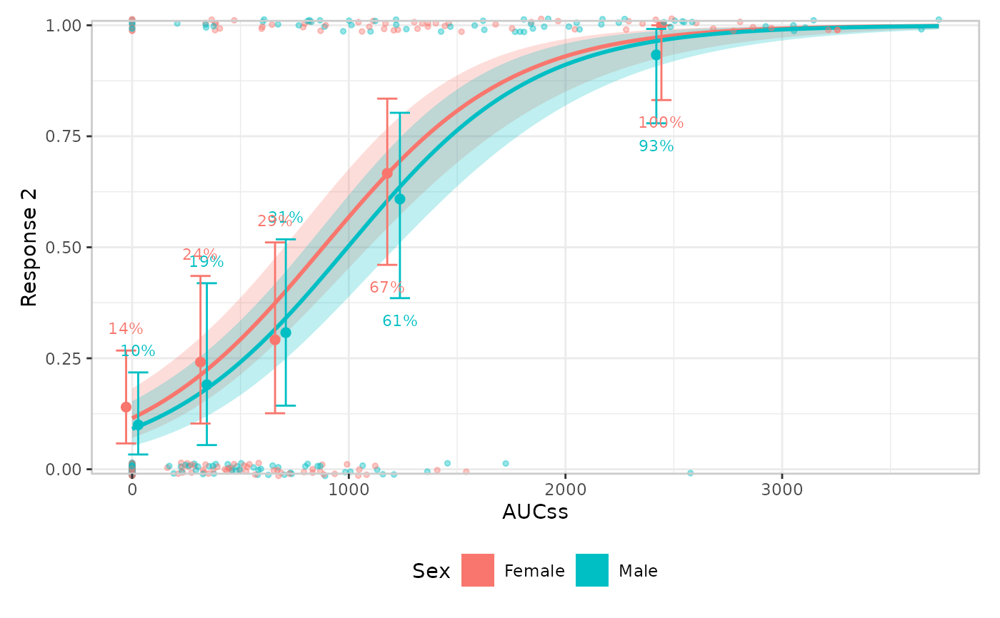
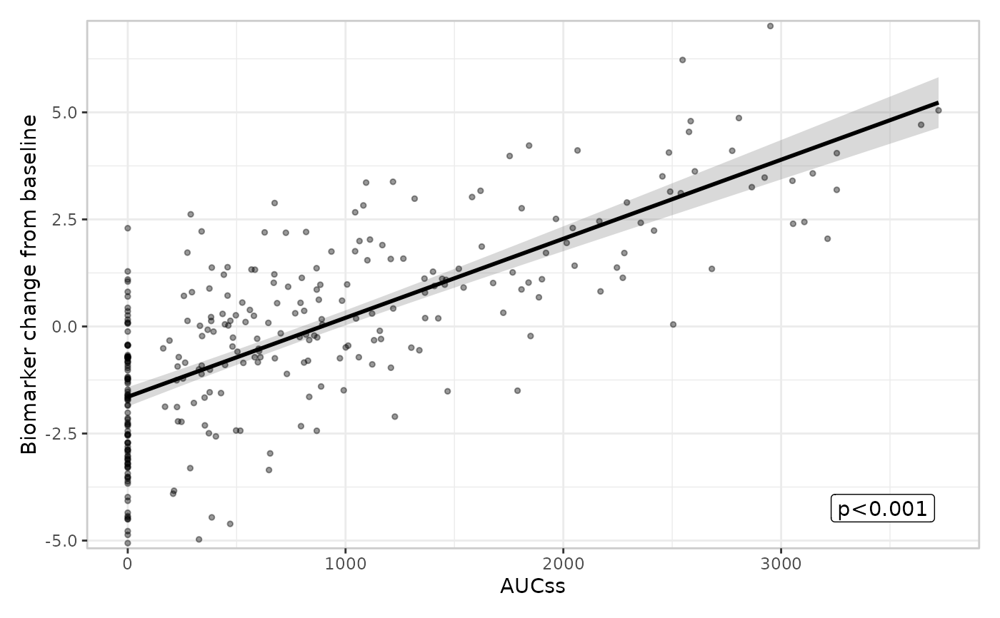
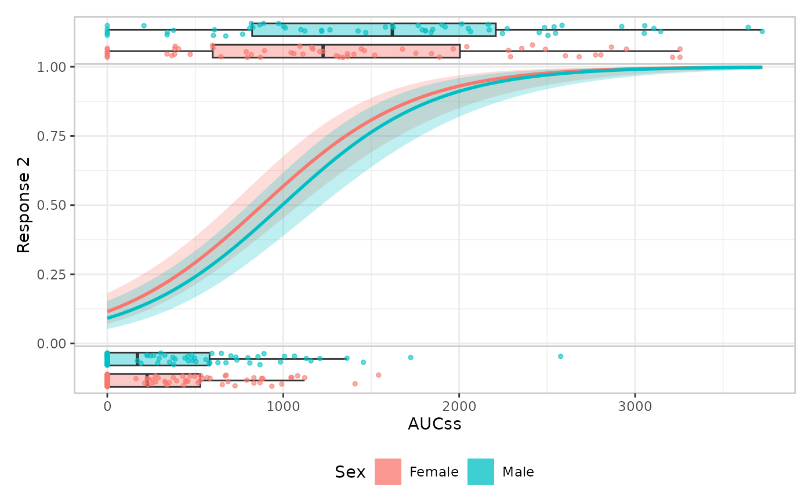
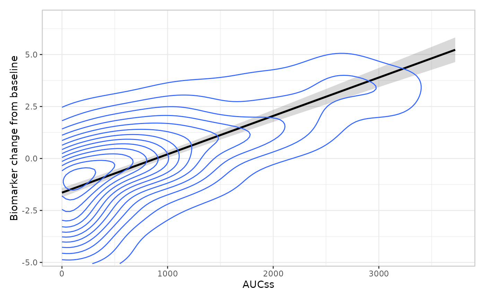

Adds the data layer: individual observations. By default, points are drawn as an overlay showing the exposure and response values in the main panel of the plot, but other possibilities are available.
Arguments
- object
Partially constructed plot (has S3 class
er_plot).- keep_strata
Logical, indicating whether this layer should be split by the plot's stratification variable; defaults to
TRUEifstratify_bywas set iner_plot(),FALSEotherwise. See "Details" for how this interacts with a builder's structural family.- style
Function drawing the data layer – defaults to
er_style_data_overlay(). Any function matching the standard(data, config, stratify, exposure, response, strata, theme, ...)signature and tagged wither_style_tag()can be supplied instead; seeer_style()and "Details".- panel
Character string:
"upper","lower", or"both"(the default). Only meaningful forer_style_data_boxjitter()on a binary response; see "Details" for when"both"is required.- ...
Additional named arguments forwarded, unchanged, to
stylewhen it's called at build time – seeer_style()'s "Passing extra arguments to a builder" section. Must be named.
Details
The default builder for the data layer is er_style_data_overlay(),
which creates a plain scatter plot for
continuous/count responses, or a scatter with a small vertical jitter
for a binary response (whose y-values are exactly 0/1 and would
otherwise overplot into two solid lines). This works uniformly across
all three response types, with no response-type dispatch on which
builder to use. er_style_data_boxjitter() instead uses a
panel-based design, and is binary-response-only: responders (response == 1) get a boxplot + jittered points in an upper panel and
non-responders (response == 0) get the same in a lower panel, so the
panel shows the exposure distribution conditional on response, not
just raw points. There is no built-in "panel"-layout builder for a
continuous/count response; panel must be "both" (the default) for these
response types regardless of builder, since there's no upper/lower
partition to select from.
Every data-layer builder declares which of these two structural
families it belongs to via er_style_tag() – "overlay" (a single call
merged into the main panel) or "panel" (one-or-more panels stacked
below the base plot) – which er_plot_add_data() reads off style
to decide how to assemble the layer, rather than taking a separate
argument for it. This makes the pairing structural rather than
incidental: er_style_data_overlay() can never be routed into upper/lower
panels, and er_style_data_boxjitter() can never be merged into the main
panel. See er_style_tag() and er_style() for how to tag a custom
builder the same way. If style is tagged with a layer other than
"data", er_plot_add_data() errors informatively; an untagged
builder is never checked (only layout is a hard requirement).
keep_strata's effect also depends on a builder's structural family:
for an "overlay"-layout builder it always means a shared color
aesthetic, for any response type; for a "panel"-layout builder on a
continuous/count response it instead produces one panel per stratum
level rather than a shared color aesthetic. panel must be "both"
for an "overlay"-layout builder (there's no upper/lower partition to
select from) and for a continuous/count response under a
"panel"-layout builder (same reason).
Examples
if (requireNamespace("erglm", quietly = TRUE)) {
library(erglm)
mod2 <- erglm_model(ae2 ~ aucss + sex, erglm_data, family = binomial())
erglm_data |>
er_plot(aucss, ae2, stratify_by = sex) |>
er_plot_add_model(mod2) |>
er_plot_add_quantiles() |>
er_plot_add_data() |>
plot()
# continuous response: overlay works the same way, with no
# response-type-specific styling needed
mod3 <- erglm_model(biomarker_change ~ aucss, erglm_data, family = gaussian())
erglm_data |>
er_plot(aucss, biomarker_change) |>
er_plot_add_model(mod3) |>
er_plot_add_data() |>
plot()
# panel-based design, binary-response only: a boxplot + jittered
# points per panel (responders above, non-responders below), instead
# of an overlay in the main panel
erglm_data |>
er_plot(aucss, ae2, stratify_by = sex) |>
er_plot_add_model(mod2) |>
er_plot_add_data(style = er_style_data_boxjitter) |>
plot()
# plug in a 2D density in the main panel instead of a scatter; tagging
# it "overlay" via `er_style_tag()` keeps it in the single main-panel
# layout -- see `?er_style`
build_data_density <- er_style_tag(
function(data, config, stratify, exposure, response, strata, theme, ...) {
ggplot2::geom_density_2d(
data = data,
mapping = ggplot2::aes(x = .data[[exposure$name]], y = .data[[response$name]])
)
},
layout = "overlay"
)
erglm_data |>
er_plot(aucss, biomarker_change) |>
er_plot_add_model(mod3) |>
er_plot_add_data(style = build_data_density) |>
plot()
}



